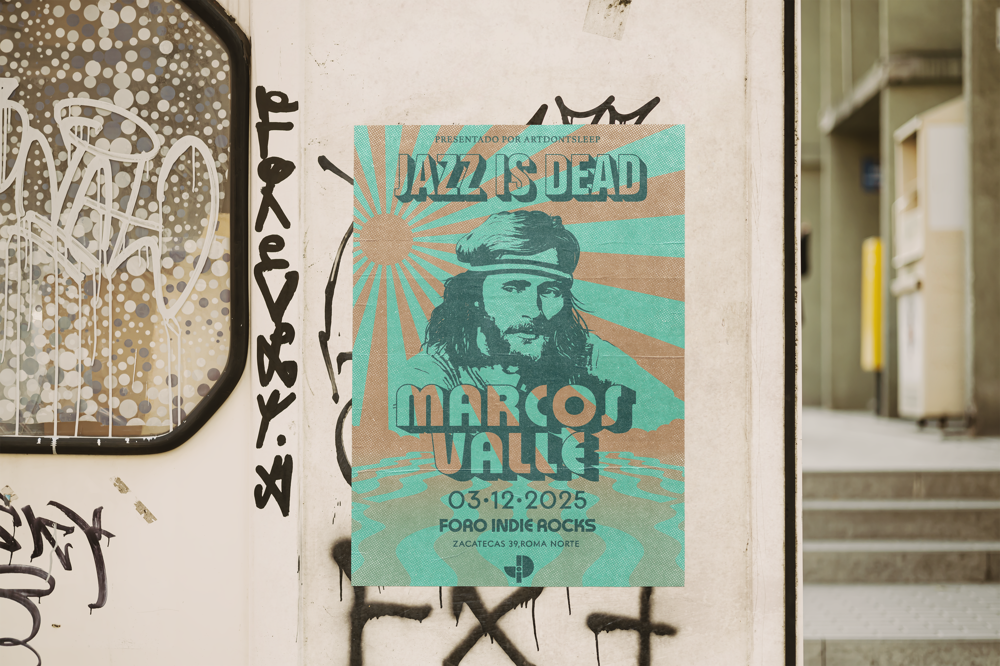

07
Jazz Is Dead
Jazz Is Dead x Marcos Valle
CDMX, 2025
Pieza gráfica desarrollada por encargo de Jazz Is Dead para una fecha del ciclo con Marcos Valle en Foro Indie Rocks, Roma Norte.
El proceso parte de una ilustración hecha a mano, retrato de Valle trabajado en tinta y trama análoga, que después se digitalizó para construir la paleta, la textura y el sistema tipográfico del cartel: rayos de sol, tramas de medio tono y una tipografía retro que dialoga con la estética psicodélica de los setenta, terreno natural tanto del sonido de Valle como del espíritu del ciclo.
De la ilustración se pasó a la animación, llevando ese mismo lenguaje; trama, rayos, vibración del color al movimiento.
"La disonancia de nuestro movimiento está sirviendo de sotavento para el cambio. A medida que la corriente se hace más fuerte, se está moviendo en la dirección opuesta a la de la superficie."

